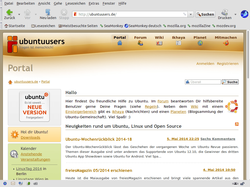

SeaMonkey
Dieser Artikel wurde für die folgenden Ubuntu-Versionen getestet:
Ubuntu 16.04 Xenial Xerus
Ubuntu 14.04 Trusty Tahr
Zum Verständnis dieses Artikels sind folgende Seiten hilfreich:
SeaMonkey  ist eine sog. Internet-Software-Suite, eine Sammlung von Programmen für verschiedene Aufgaben unter einer gemeinsamen Oberfläche. Das Programm stellt die Weiterführung der Mozilla Suite dar, deren Entwicklung von der Mozilla Foundation eingestellt wurde. Man entschied sich damals, statt der Suite Einzelkomponenten wie Firefox und Thunderbird zu entwickeln.
ist eine sog. Internet-Software-Suite, eine Sammlung von Programmen für verschiedene Aufgaben unter einer gemeinsamen Oberfläche. Das Programm stellt die Weiterführung der Mozilla Suite dar, deren Entwicklung von der Mozilla Foundation eingestellt wurde. Man entschied sich damals, statt der Suite Einzelkomponenten wie Firefox und Thunderbird zu entwickeln.
SeaMonkey enthält folgende Komponenten:

Webbrowser (Navigator)
E-Mail-Programm (MailNews)
HTML-Editor (Composer)
Adressbuch
IRC-Programm (Chatzilla)
Daneben sind diverse Verwaltungsprogramme integriert, beispielsweise ein Download-Manager, ein Passwort-Manager, ein Profil-Manager, um nur einige zu nennen. Bemerkenswert ist die Tatsache, dass SeaMonkey nicht von Mozilla weiterentwickelt wird. Die Mozilla-Foundation stellt zwar ihre Server für die Internetpräsenz und den Download des Programms zur Verfügung, die Entwicklung wird jedoch von einer Gruppe von Freiwilligen aus der Gemeinschaft der Anwender (Community) getragen. SeaMonkey kann, genau wie Firefox, durch Erweiterungen mit zusätzlichen Funktionen ausgestattet werden.
Installation¶
SeaMonkey war bis Ubuntu 11.10 in den offiziellen Paketquellen enthalten. Inzwischen ist die Installation nur noch über eine Fremdquelle [1] oder manuell möglich.
Fremdquelle¶
Um Seamonkey zu installieren, kann man ubuntuzilla  als Fremdquelle verwenden. In dieser Fremdquelle sind auch aktuelle Pakete von Firefox und Thunderbird enthalten (die aufgrund eines anderen Paketnamens aber die Versionen aus den offiziellen Paketquellen nicht automatisch überschreiben).
als Fremdquelle verwenden. In dieser Fremdquelle sind auch aktuelle Pakete von Firefox und Thunderbird enthalten (die aufgrund eines anderen Paketnamens aber die Versionen aus den offiziellen Paketquellen nicht automatisch überschreiben).
Um aus der Fremdquelle zu installieren, muss man unabhängig von der Ubuntu-Version die folgende Paketquelle freischalten:
Hinweis!
Zusätzliche Fremdquellen können das System gefährden.
deb http://downloads.sourceforge.net/project/ubuntuzilla/mozilla/apt all main
Um die Fremdquelle zu authentifizieren, kann man den Signierungsschlüssel mit folgendem Befehl importieren:
sudo apt-key adv --recv-keys --keyserver keyserver.ubuntu.com 2667CA5C
Nach Einbinden der Fremdquelle und Aktualisieren der Paketquellen erfolgt die Installation [2] über das Metapaket:
seamonkey-mozilla-build
 mit apturl
mit apturl
Paketliste zum Kopieren:
sudo apt-get install seamonkey-mozilla-build
sudo aptitude install seamonkey-mozilla-build
Die Sprache der Programmoberfläche ist Englisch. Bei Bedarf installiert man ein zur jeweiligen SeaMonkey-Version passendes deutsches Sprachpaket  (langpack). Abschließend muss das jeweilige Sprachpaket noch über "Edit -> Preferences -> Appearance -> User Interface Language" bzw. "Bearbeiten -> Einstellungen -> Erscheinungsbild -> Sprache der Benutzeroberfläche" aktiviert werden.
(langpack). Abschließend muss das jeweilige Sprachpaket noch über "Edit -> Preferences -> Appearance -> User Interface Language" bzw. "Bearbeiten -> Einstellungen -> Erscheinungsbild -> Sprache der Benutzeroberfläche" aktiviert werden.
Manuell¶
Die aktuellste Version lässt sich in der passenden Sprache manuell herunterladen . Anschließend wird die Archivdatei im Homeverzeichnis entpackt [3] – mehr ist nicht erforderlich. Eine Aktualisierung (Update) kann innerhalb des Programms über "Hilfe -> Nach Updates suchen..." gestartet werden. Ferner kann über "Bearbeiten -> Einstellungen -> Erweitert -> Software-Installation" festgelegt werden, ob und wie häufig automatisch nach Updates gesucht werden soll.
Zum Start des Programms [4] dient das Shell-Skript seamonkey. Alternativ kann ein Programmstarter [5] eingerichtet und nach ~/.local/share/applications/seamonkey.desktop kopiert werden (BENUTZERNAME bitte anpassen):
[Desktop Entry] Name=Seamonkey GenericName=Internet Suite Comment=Web Browser, Email/News Client, HTML Editor, IRC Client Exec=/home/BENUTZERNAME/seamonkey/seamonkey %u Icon=/home/BENUTZERNAME/seamonkey/chrome/icons/default/default48.png Terminal=false X-MultipleArgs=false StartupWMClass=SeaMonkey Type=Application Categories=Network;WebBrowser;Email;News;WebDevelopment;IRCClient; MimeType=text/html;text/xml;application/xhtml+xml;x-scheme-handler/ftp;x-scheme-handler/http;x-scheme-handler/https;
Falls eine systemweite Installation gewünscht ist, kopiert man den entstandenen Ordner mit Root-Rechten nach /opt/. Ein Nachteil der systemweiten Installation ist, dass die integrierte Update-Funktion nicht mehr verwendet werden kann. Bei dieser Installationsmethode lädt man besser die aktuelle Version neu herunter, löscht den Ordner /opt/seamonkey/ und wiederholt das Entpacken und Kopieren. Einen Programmstarter speichert man als /usr/local/share/applications/seamonkey.desktop.
Benutzung¶
Über die kleine Symbolleiste links unten im SeaMonkey-Fenster kann man leicht zwischen den einzelnen Programmen wechseln. Dabei wird der Name des jeweiligen Programms bei Mausberührung als Tooltip angezeigt. Fehlen diese Symbole, können sie über "Ansicht -> Anzeigen/Verstecken -> Komponentenleiste" sichtbar gemacht werden werden.
Ansonsten ähnelt insbesondere der Browser sehr dem Nachfolger Firefox. Über das Menü "Extras" hat man einen Schnellzugriff auf die wichtigsten Einstellungen. Zentrale Einstellungen lassen sich über "Bearbeiten -> Einstellungen" verändern. Hier kann man nun links den entsprechenden Bereich wählen, wobei man, wie bei manchen Dateimanagern, durch einen Klick auf das Plus-Kästchen, die Untermenüs "aufklappt".
Über F1 oder "Hilfe -> Hilfe-Inhalt" lässt sich eine umfangreiche, deutschsprachige Hilfe zu allen Programmteilen aufrufen.
Startparameter¶
Wer Seamonkey nicht nur als Browser einsetzen möchte, kann sich eigene Programmstarter für die verschiedenen Komponenten einrichten. Der jeweils erforderliche Befehl in der Form seamonkey -OPTION ist der folgenden Tabelle zu entnehmen, als Grundgerüst kann der im Abschnitt manuelle Installation beschriebene Code dienen. Wer sich beim MIME-Typ unsicher ist, lässt diesen einfach weg.
| Optionen beim Programmstart | ||
| Parameter | Zweck | |
-help | zeigt alle verfügbaren Startparameter an | |
-addressbook | öffnet das Adressbuch | |
-browser | öffnet ein Browserfenster | |
-edit | öffnet den HTML-Editor | |
-mail | öffnet das E-Mail-Programm | |
-news | öffnet den Newsreader | |
Plugins¶
Wird Seamonkey als Zweitbrowser zum unter Ubuntu vorinstallierten Firefox genutzt, stehen automatisch alle bereits installierten Plugins zur Verfügung. Welche das konkret sind, kann anhand der Pseudo-URL about:plugins ermittelt werden.
Add-ons¶
Die Anzahl verfügbarer Add-ons ist zwar deutlich geringer als bei Firefox/Thunderbird, dennoch findet man viele häufig genutzte Erweiterungen auch für Seamonkey (z.B. Adblock Plus, NoScript, Stylish, Download-Hilfen, Enigmail u.v.a.m.). Eine Übersicht bietet die offizielle Erweiterungsseite . Welche Erweiterung man tatsächlich benötigt, ist immer eine Geschmacksfrage. Empfehlenswert ist auf jeden Fall ein deutsches Wörterbuch , um in Formular- und Bearbeitungsfeldern eine Rechtschreibprüfung nutzen zu können.
Die Installation erfolgt wie im Artikel Firefox/Erweiterungen beschrieben.
Aussehen¶
Wie bei vielen anderen Browsern kann auch das Aussehen von SeaMonkey durch Themes (Personas) an den persönlichen Geschmack angepasst werden. Themes für SeaMonkey werden genau wie Firefox-Themes installiert. Einige Themes findet man bei SeaMonkey Add-ons - Themes , während SeaMonkey Add-ons - Oberflächenanpassungen sich mit der optischen Änderung vorhandener Browser-Elemente beschäftigt.
Wer Personas als zu einfach gestrickt empfindet, findet in der Rubrik Vollständige Themes interessante Anregungen. Empfehlenswert für alle auf der Grafikbibliothek GTK basierenden Ubuntu-Varianten ist beispielsweise GNOMErunner/GTK Revived (Freedesktop) .
Links¶
Sprachpakete
- erst Version, dann langpack auswählenErweiterungen für SeaMonkey
- Übersicht
SeaMonkey - Wikipedia
Seamonkey vereint alle Mozilla-Komponenten - Artikel aus EasyLinux 04/2006
Webbrowser
 Programmübersicht
Programmübersicht
- Erstellt mit Inyoka
-
 2004 – 2017 ubuntuusers.de • Einige Rechte vorbehalten
2004 – 2017 ubuntuusers.de • Einige Rechte vorbehalten
Lizenz • Kontakt • Datenschutz • Impressum • Serverstatus -
Serverhousing gespendet von